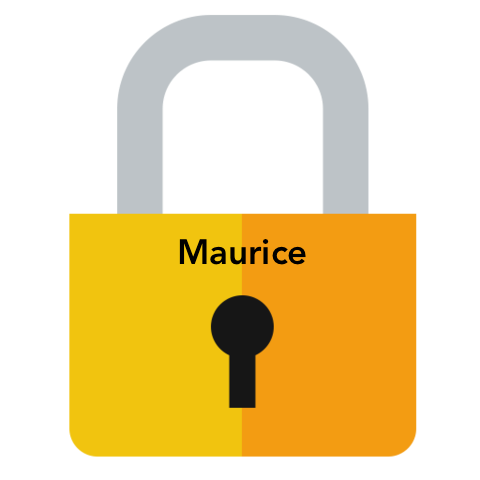
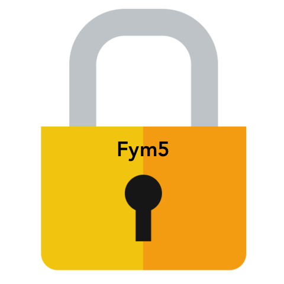
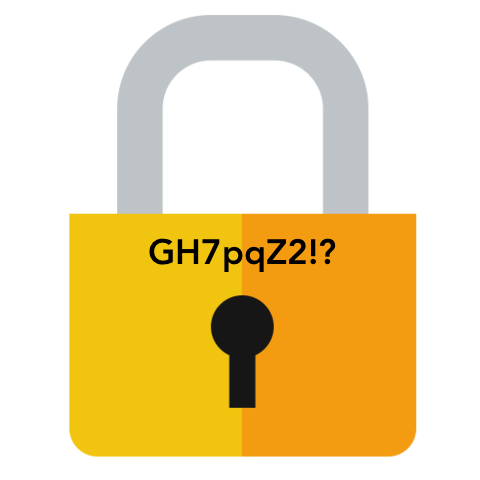
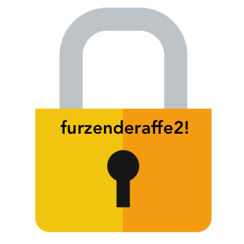

Passwort-Generator¶
Passwörter schützen deinen Computer, deine E-Mails und deine Daten vor fremdem Zugriff. In deiner ersten Aufgabe erstellst du ein Tool (Werkzeug), das für dich sichere und einprägsame Passwörter erfindet.
Mit dem Passwort-Generator kannst du Wörter, Zahlen und Zeichen zu starken Passwörtern kombinieren. Wenn du das Programm ausführst, zeigt es ein Passwort an. Du kannst dir weitere Passwörter erstellen lassen, bis dir eins gefällt.
Gute Passwörter sind leicht zu merken, aber schwer zu erraten - oder zu knacken. Schauen wir uns einmal ein paar Beispiele an:
|  | Namen sind zwar leicht zu merken, aber dafür auch leicht zu erraten.. |
|  | Etwas komplizierter, aber Hacker können es in 2 Sekunden knacken! |
|  | Bei diesem Passwort braucht der Hacker etwas Zeit.. |
|  | Dieses ist sicher und leicht zu merken! |
{kind=link}
{kind=link}
{kind=link}
{kind=link}
In dieser Aufgabe lernst du das Modul random kennen. Das Programm trifft aus Gruppen von Adjektiven, Nomen, Zahlen und Satzzeichen eine zufällige Auswahl und kombiniert daraus Passwörter. Deine Passwörter sind ab jetzt so irre, dass du sie nie vergessen wirst!
Bemerkung
Adjektiv + Nomen + Zahl + Satzzeichen
Prinzip¶
Das Programm wählt die vier Teile des Passworts zufällig aus, setzt sie zusammen und zeigt das Passwort im Shell-Fenster an. Wenn du das Passwort nicht magst, wiederholt es die Schritte, gefällt es dir, endet das Programm.
Module einfügen¶
Zu tun
✏️ Wie erwähnt, müssen wir nicht das ganze Programm selber schreiben! Wir gehen einfach einmal in die Bibliothek und schauen uns ein wenig um. Denke daran, dass du zwei dinge brauchst: ein Modul, dass Worte auch als solche erkennt und ein weiteres Modul, dass den Zufallsgenerator spielt.
Findest du aus den untenstehenden Modulen die richtigen?
pandas ; random ; os ; string ; numpy ; turtle ; matplotlib
Die Module kannst du gerade zu Beginn aus der Bibliothek importieren, denn dann kannst du sie später ohne weiteren Aufwand im Code verwenden.
Wortlisten¶
Zum Erstellen neuer Passwörter brauchst du eine Liste für Adjektive und eine für Nomen. In Python kannst du zusammengehörige Elemente in Listen speichern. Setze die ganze Liste in []-Klammern und trenne die Elemente durch Kommas.
Adjektive¶
die_adjektive = ['schläfrig', 'lahm', 'rot', 'tapfer', 'flauschig', 'stolz']
Nomen¶
die_nomen = ['Apfel', 'Dinosaurier', 'Drachen', 'Panda', 'Kartoffel', 'Haus', 'Mixer']
Für dein Passwort muss das Programm zufällig ein Adjektiv und ein Nomen auswählen. Dazu verwendest du die Funktion choice() (englisch für ‚Auswahl‘) im Modul random. Mit dieser Funktion kannst du immer zufällige Elemente aus einer Liste wählen lassen. Du musst ihr nur die Variable mit den Elementen übergeben.
# die Variable 'adjektiv' enthält ein zufällig gewähltes Element aus der Adjektiv-Liste
adjektiv = random.choice(die_adjektive)
Zu tun
✏️ Definiere mit Hilfe der obigen Beschreibung für adjektiv die Variable nomen und füge sie direkt in deinen Code!
Zufällige Zahlen¶
Nun fehlt uns noch die zufällige Zahl. Mit der Funktion randrange() aus dem Modul random kannst du nun eine Zahl zwischen 0 und 99 wählen.
Satzzeichen¶
Mit der Funktion random.choice() kannst du per Zufall ein Satzzeichen auswählen - so ist das Passwort noch schwerer zu knacken!
Bemerkung
Eine Konstante ist eine besondere Variable mit unveränderlichem Inhalt. Die Konstante string.punctuation enthält einen string aus lauter Satzzeichzen. Der Inhalt wird angezeigt, wenn du in der Kommandozeile tippst: print(string.punctuation)
Zu tun
✏️ Setze die geforderte Code-Zeile für die zufällige Zahl und dfas zufällige Satzzeichen direkt ans Ende deines Codes.
Geschafft? Wenn du dir nicht sicher bist, lies noch einmal in den oberen Abschnitten nach..
Das neue Passwort¶
Nun kannst du die Teile zu einem neuen, sicheren Passwort kombinieren. Setze die folgen Codezeilen ans Ende des Programms
passwort = adjektiv + nomen + str(zahl) + sonderzeichen
print("Das neue Passwort ist: %s" % passwort)